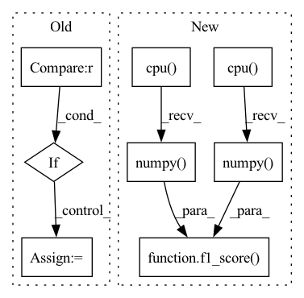

Pattern ID :17031

Before Change
a = nn.Softmax()(outs)
for ii in range(len(outs)):
total += 1
if outs[ii].tolist().index(max(outs[ii])) == y_batch[ii]:
correct += 1
pts.append([a[ii][1], y_batch[ii]])
print((float(correct)/total))
if auprc:
After Change
pred.append(torch.sigmoid(outs).round())
true.append(j[-1])
if pred:
pred = torch.cat(pred, 0).cpu().numpy()
true = torch.cat(true, 0).cpu().numpy()
if auprc:
print(AUPRC(pts))
if task == "classification":
print("acc: "+str(accuracy_score(true, pred)))
return accuracy_score(true, pred)
elif task == "multilabel":
print(" f1_micro: "+str(f1_score(true, pred, average="micro"))+\
" f1_macro: "+str(f1_score(true, pred, average="macro")))
return f1_score(true, pred, average="micro"), f1_score(true, pred, average="macro")
In pattern: SUPERPATTERN
Frequency: 3
Non-data size: 8
Instances
Fragment ID: 57164424
Project Name: pliang279/multibench
Commit Name: e8df377596458671f3a074b2f5d41a118b3fe6ae
Time: 2021-06-06
Author: ztwu_nil@zju.edu.cn
File Name: training_structures/MFM.py
M Class Name: AnonimousClass
N Class Name: AnonimousClass
M Method Name: test_MFM(4)
N Method Name: test_MFM(3)
M Parent Class:
N Parent Class:
M File Name: training_structures/MFM.py
N File Name: training_structures/MFM.py
M Start Line: 85
M End Line: 103
N Start Line: 115
N End Line: 144
'>
Before Change
metrics.log_scalar(
f"{split}_acc", acc_sum / sample_size, sample_size, round=3
)
if probs.size(-1) == 2:
// binary classification task, add auc score
targets = torch.cat(
[log.get("target", 0) for log in logging_outputs], dim=0
)
df = pd.DataFrame(
{"probs": probs[:, 1].cpu(), "targets": targets.cpu()}
)
auc = roc_auc_score(df["targets"], df["probs"])
metrics.log_scalar(f"{split}_auc", auc, sample_size, round=3)
After Change
metrics.log_scalar(
f"{split}_acc", acc_sum / sample_size, sample_size, round=3
)
preds = torch.cat(
[log.get("prob").argmax(dim=-1) for log in logging_outputs], dim=0
).cpu().numpy()
targets = torch.cat(
[log.get("target", 0) for log in logging_outputs], dim=0
).cpu().numpy()
metrics.log_scalar(
f"{split}_pre", precision_score(targets, preds), round=3
)
metrics.log_scalar(
f"{split}_rec", recall_score(targets, preds), round=3
)
metrics.log_scalar(
f"{split}_f1", f1_score(targets, preds), sample_size, round=3
)
'>
Fragment ID: 57164425
Project Name: dptech-corp/uni-mol
Commit Name: 2df26a3c3209f52e4d248de5452b68fa0d8dcd9c
Time: 2022-09-08
Author: 2015201981@ruc.edu.cn
File Name: unimol/losses/cross_entropy.py
M Class Name: FinetuneCrossEntropyPocketLoss
N Class Name: FinetuneCrossEntropyPocketLoss
M Method Name: reduce_metrics(2)
N Method Name: reduce_metrics(2)
M Parent Class: FinetuneCrossEntropyLoss
N Parent Class: FinetuneCrossEntropyLoss
M File Name: unimol/losses/cross_entropy.py
N File Name: unimol/losses/cross_entropy.py
M Start Line: 270
M End Line: 293
N Start Line: 270
N End Line: 297
'>
Before Change
a = nn.Softmax()(outs)
for ii in range(len(outs)):
total += 1
if outs[ii].tolist().index(max(outs[ii])) == y_batch[ii]:
correct += 1
pts.append([a[ii][1], y_batch[ii]])
print((float(correct)/total))
if auprc:
After Change
pred.append(torch.sigmoid(outs).round())
true.append(j[-1])
if pred:
pred = torch.cat(pred, 0).cpu().numpy()
true = torch.cat(true, 0).cpu().numpy()
if auprc:
print(AUPRC(pts))
if task == "classification":
print("acc: "+str(accuracy_score(true, pred)))
return accuracy_score(true, pred)
elif task == "multilabel":
print(" f1_micro: "+str(f1_score(true, pred, average="micro"))+\
" f1_macro: "+str(f1_score(true, pred, average="macro")))
return f1_score(true, pred, average="micro"), f1_score(true, pred, average="macro")
'>
Fragment ID: 57164431
Project Name: pliang279/multibench
Commit Name: 08e57215227c5575c74f7942e287340eb5e50eb7
Time: 2021-06-06
Author: ztwu_nil@zju.edu.cn
File Name: training_structures/MFM.py
M Class Name: AnonimousClass
N Class Name: AnonimousClass
M Method Name: test_MFM(4)
N Method Name: test_MFM(3)
M Parent Class:
N Parent Class:
M File Name: training_structures/MFM.py
N File Name: training_structures/MFM.py
M Start Line: 85
M End Line: 103
N Start Line: 115
N End Line: 144